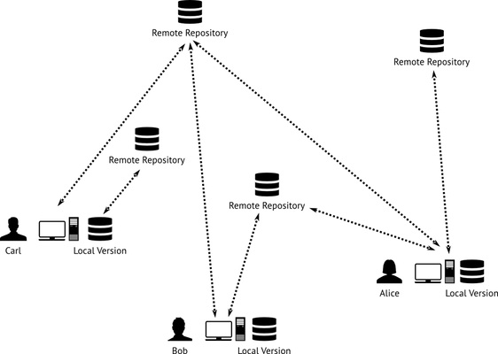
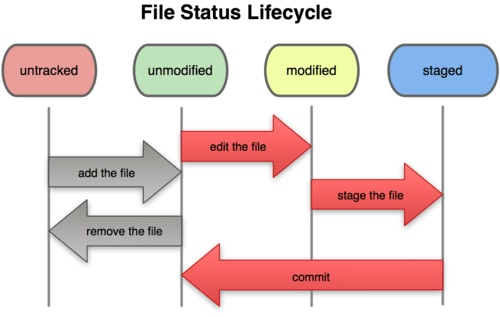

Design with the user
28 November 2013
1. Version control systems
2. Git
1. Version control systems
A collaborative process: an example
Source: http://reprap.org/wiki/Mendel
A collaborative process: A spool for the RepRap Mendel
A real example, from Thingiverse
Source: http://www.thingiverse.com/
A collaborative process: A spool for the RepRap Mendel (01)
A collaborative process: A spool for the RepRap Mendel (02)

A collaborative process: A spool for the RepRap Mendel (03)
A centralized version control system

A centralized version control system: workflow
A centralized version control system: workflow
A centralized version control system: workflow
Subversion (SVN)
Source: http://subversion.apache.org/
Subversion (SVN): a free book
Source: Pilato, C. M., Collins-Sussman, B., & Fitzpatrick, B. W. (2008). Version control with Subversion. Sebastopol, CA: O’Reilly Media. Retrieved from http://svnbook.red-bean.com/
Versioning model: the problem
Source: Pilato, C. M., Collins-Sussman, B., & Fitzpatrick, B. W. (2008). Version control with Subversion. Sebastopol, CA: O’Reilly Media. Retrieved from http://svnbook.red-bean.com/
Versioning model: The lock-modify-unlock solution
Source: Pilato, C. M., Collins-Sussman, B., & Fitzpatrick, B. W. (2008). Version control with Subversion. Sebastopol, CA: O’Reilly Media. Retrieved from http://svnbook.red-bean.com/
Versioning model: The copy-modify-merge solution
Source: Pilato, C. M., Collins-Sussman, B., & Fitzpatrick, B. W. (2008). Version control with Subversion. Sebastopol, CA: O’Reilly Media. Retrieved from http://svnbook.red-bean.com/
Versioning model: The copy-modify-merge solution
Source: Pilato, C. M., Collins-Sussman, B., & Fitzpatrick, B. W. (2008). Version control with Subversion. Sebastopol, CA: O’Reilly Media. Retrieved from http://svnbook.red-bean.com/
2. Git
Git
Source: http://git-scm.com/
Git
Source: http://youtu.be/hKfo0OXc1BI
A distributed version control system
A distributed version control system: workflow
A distributed version control system: workflow
A distributed version control system: workflow

A distributed version control system: workflow

A distributed version control system: workflow
Git: a good free book
Source: Chacon, S. (2009). Pro Git. Berkeley, CA; New York: Apress ; Distributed to the Book trade worldwide by Springer-Verlag. Retrieved from http://git-scm.com/book
Git: a better but not free book
Source: Loeliger, J., & McCullough, M. (2012). Version Control with Git: Powerful tools and techniques for collaborative software development (2 edition.). O’Reilly Media.
VCS: history of differences (deltas)
Source: Chacon, S. (2009). Pro Git. Berkeley, CA; New York: Apress ; Distributed to the Book trade worldwide by Springer-Verlag. Retrieved from http://git-scm.com/book
Git: history of a file system
Source: Chacon, S. (2009). Pro Git. Berkeley, CA; New York: Apress ; Distributed to the Book trade worldwide by Springer-Verlag. Retrieved from http://git-scm.com/book
Git: architecture
Source: Chacon, S. (2009). Pro Git. Berkeley, CA; New York: Apress ; Distributed to the Book trade worldwide by Springer-Verlag. Retrieved from http://git-scm.com/book
Git: workflow of a file
Source: Chacon, S. (2009). Pro Git. Berkeley, CA; New York: Apress ; Distributed to the Book trade worldwide by Springer-Verlag. Retrieved from http://git-scm.com/book
Git: download it
Source: http://git-scm.com/
Open the Terminal (Mac)
Open the Git Bash (Win)
Source: https://help.github.com/articles/set-up-git#platform-windows
The command line, some notes (01)
cd directoryname #Enter into a directory
cd .. #Exit from the directory by going to the parent directory
ls #List the files of the current directory
ls -l #List the files of the current directory, with details
ls -la #List the files with hidden files and folders
The command line, some notes (02)
mkdir directoryname #Make a directory
rm -r directoryname #Erase a directory and its contents
touch namefile #Make an empty file
vim namefile #Edit an empty file
rm namefile #Erase a file
mv namefile wheretomove #Move or rename a file
Git: configuration
git config --global user.name "Name Surname" #Configure your name
git config --global user.email "email@email.com" #Configure your e-mail
Download P4Merge (Win, Mac, Linux)
Source: http://www.perforce.com/product/components/perforce-visual-merge-and-diff-tools
Download P4Merge (Win, Mac, Linux)
Source: http://www.perforce.com/downloads/Perforce/20-User#10
Install only P4Merge (Win, Mac, Linux)
Configure Git to use P4Merge (on Mac)
git config --global merge.tool p4mergetool
git config --global mergetool.p4mergetool.cmd \
"/Applications/p4merge.app/Contents/Resources/launchp4merge \$PWD/\$BASE \$PWD/\$REMOTE \$PWD/\$LOCAL \$PWD/\$MERGED"
git config --global mergetool.p4mergetool.trustExitCode false
git config --global mergetool.keepBackup false
git config --global diff.tool p4mergetool
git config --global difftool.p4mergetool.cmd \
"/Applications/p4merge.app/Contents/Resources/launchp4merge \$LOCAL \$REMOTE"
Configure Git to use P4Merge (on Win)
git config --global merge.tool p4mergetool
git config --global mergetool.p4merge.cmd 'p4merge.exe \"$BASE\" \"$LOCAL\" \"$REMOTE\" \"$MERGED\"'
git config --global mergetool.p4mergetool.trustExitCode false
git config --global mergetool.keepBackup false
git config --global diff.tool p4mergetool
git config --global difftool.p4merge.cmd 'p4merge.exe \"$BASE\" \"$LOCAL\" \"$REMOTE\" \"$MERGED\"'
Lunch time! Questions?
See you at 13:00
2. Intellectual property and design: laws and the design process
Thank you!
Massimo Menichinelli / info@openp2pdesign.org / @openp2pdesign

This work is licensed under a Creative Commons Attribution 3.0 Unported License.
Massimo Menichinelli - 2013
openp2pdesign.org